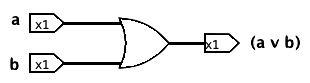
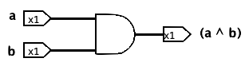
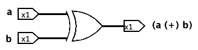
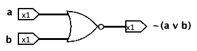
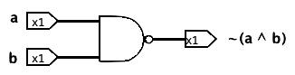
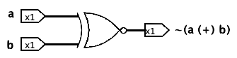
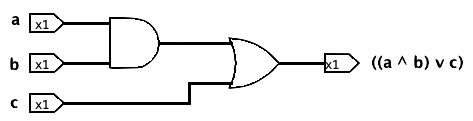
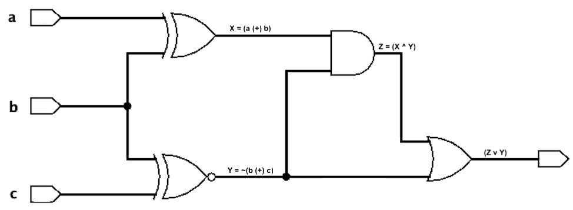

Module 01: Propositional Logic
Truth Value
A proposition (or statement) is a sentence that has a truth value, i.e., it is only true or false, but never both. For example:
| 1 is positive | True |
| 10 > 0 | True |
| 2+2 = 5 | False |
| 3 is even | False |
| Canada is in North America | True |
| Brazil is in Europe | False |
In logic, we work with truth values (True or False) just like mathematics works with numbers. Besides using natural language, English in our case, we can also represent a statement using an expression, a truth table, or a circuit.
These truth values can also be represented in other forms. One may represent true by using the number 1, by stating a light or button is on, or by stating a switch is closed. Also, one may represent false by using the number 0, by stating a light or button is off, or by stating a switch is open.
The NOT operator flips the truth value: if a statement is true, NOT makes it false, and if a statement is false, NOT makes it true. For example:
| 1 is not positive | False |
| 10 ≤ 0 | False |
| 2+2 ≠ 5 | True |
| 3 is odd | True |
| Canada is not in North America | False |
| Brazil is not in Europe | True |
Considering that p is a variable representing one statement, for example, p means the statement "Alice is tall." The only values p may have is true or false. We can represent the negation of this sentence, i.e., "Alice is not tall," using the symbol ~p.
We can also represent the NOT operator by creating its truth table, which is a table that will represent all possible options for this sentence. Note that in this case we use T to represent true and F to represent false.
| p | ~p |
| F | T |
| T | F |
Finally, another representation of this operator is by drawing its logic gate. In a circuit, the inputs, in this case p, enter a gate, being modified by them and generating an output, in this case ~p. Therefore, NOT is represented using a NOT gate, which has one input and one output and looks like a triangle with a circle at its tip:
Operators
The following are the main operators that work on this type of data, along with the NOT operator described above. You don't need to memorize this list; a formula sheet will be provided to you at all assessments during the course.
OR
The OR operator (also called disjunction) evaluates to true when at least one of the inputs is true. For example, the statement "x is greater than 10 or x is even" evaluates to true when x is 12 (since both requirements have been met), when x is 2 (since the second requirement is met), or when x is 13 (since the first requirement is met). It will be false when x is 3, since no requirement is met.
| a | b | (a v b) |
| F | F | F |
| F | T | T |
| T | F | T |
| T | T | T |
When representing the OR operator in a circuit, we use the following gate (which looks like a triangle with the sides leading to its point bowed outward and the side facing its inputs bowed inward):

AND
The AND operator (also called conjunction) evaluates to true only when both inputs are true. For example, the statement "x is greater than 10 and x is even" evaluates to true when x is 12 but evaluates to false when x is 10, since both requirements have to be met. Another way of describing this operation in English is using the word "but." For example, "x is greater than 10, but x is not odd" means the same as "x is greater than 10 and x is even."
| a | b | (a ^ b) |
| F | F | F |
| F | T | F |
| T | F | F |
| T | T | T |
When representing the AND operator in a circuit, we use the following gate (which looks like a vertical line on the input side and a half circle on the output side):

XOR
The Exclusive Or (XOR) operator evaluates to true only when exactly one of the inputs is true, but not both. Another way to interpret the XOR gate is to check if the two inputs have different truth values (one is true and the other is false).
| a | b | (a ⊕ b) |
| F | F | F |
| F | T | T |
| T | F | T |
| T | T | F |
When representing the XOR operator in a circuit, we use the following gate (which looks like an OR gate with a second parallel arc on its inputs):

NOR
The NOR operator is the negation of the OR operator and evaluates to false when at least one of the inputs is true.
| a | b | ~(a v b) |
| F | F | T |
| F | T | F |
| T | F | F |
| T | T | F |
When representing the NOR operator in a circuit, we use the following gate (note the small circle added to the OR gate):

NAND
The NAND operator is the negation of the AND operator and evaluates to false only when both inputs are true.
| a | b | ~(a ^ b) |
| F | F | T |
| F | T | T |
| T | F | T |
| T | T | F |
When representing the NAND operator in a circuit, we use the following gate (note the small circle added to the AND gate):

XNOR
The Exclusive Nor (XNOR) operator is the negation of the XOR operator and evaluates to false only when exactly one of the inputs is true, but not both. Another way to interpret the XNOR gate is to check if the two inputs have the same truth values (both are true or both are false).
| a | b | ~(a ⊕ b) |
| F | F | T |
| F | T | F |
| T | F | F |
| T | T | T |
When representing the XNOR operator in a circuit, we use the following gate (note the small circle added to the XOR gate):

Expression, Truth Table, and Circuit
Logical statements can be represented in three equivalent forms: an expression, a truth table, or a circuit.
The expression form of a statement uses variables (such as p, q, and r) and logical operators (such as v, ^ and ~).
((a ⋀ b) ⋁ c))
The truth table for a given statement will list the outputs for all possible combinations of the inputs' truth values. Note that by default, the first row of a truth table should start with all inputs being false and the last row with all inputs being true.
| a | b | c | ((a ^ b) v c) |
| F | F | F | F |
| F | F | T | T |
| F | T | F | F |
| F | T | T | T |
| T | F | F | F |
| T | F | T | T |
| T | T | F | T |
| T | T | T | T |
The circuit is the visual layout of a statement using logic gates. Each operation is described by a gate that has inputs connected to its left side and the output on its right side. Each gate's output can be used as an input to another gate, cascading in the same way that expressions can be composed. A wire can come from one input to the circuit or the output of one gate, never more than one. We cannot wire two circuit inputs or gate outputs together directly. Finally, no path along wires and forward through gates in the circuit can loop back on itself.

Two gates can share the same input; when this happens, the wire is split into two branches, and a small circle is used to indicate the split. For example, in the circuit below, b serves as the input for both the XOR and XNOR gates, so its wire is divided into two, with the split marked by a small circle.

This circuit represents the expression (((a (+) b) ^ ~(b (+) c)) v ~(b (+) c)), and it shows the output for the inputs a = false, b = true, and c = false.
The order of operators may impact the final truth value; to avoid ambiguity, each operator in an expression has to be described within round brackets (no different brackets are allowed). Furthermore, in this course, we will not allow gates or expressions with three inputs. Therefore, (a v b ^ c) is considered ambiguous and incorrect and should be expressed as either ((a v b) ^ c) or (a v (b ^ c)). Furthermore, (a v b v c) is considered incorrect as well (although not ambiguous) and should be written as either ((a v b) v c) or (a v (b v c)).
Logically Equivalent
Two statements are called logically equivalent if, and only if, they have the same truth table, i.e., they output the same truth values for each possible combination of the truth values of their variables. Therefore, two statements are not logically equivalent when there is at least one assignment of truth values to their variables such that the two statements have different truth values. Equivalently, their truth tables differ in at least one row.
Note that the symbol for logically equivalent is ≡ and not =. We say two variables are equal if they have the same truth value. For example, p = q, when p represents 10 > 0 and q represents 20 > 10, which has only one truth value possible: both are true.
Remember that the truth of a statement may depend on the truth values of variables in the statement. So, two statements that are equivalent (have the same truth tables) may not be always-true or always-false in their truth tables. For example, P ≡ Q, if P means ~(a v b) and Q means (~a ^ ~b).
| a | b | ~(a v b) | (~a ^ ~b) |
| F | F | T | T |
| F | T | F | F |
| T | F | F | F |
| T | T | F | F |
In the same way, two digital logic circuits are equivalent if, and only if, their input/output tables are identical.
A tautology is a statement form that is always true regardless of the truth values of its inputs.
| a | (~a v a) |
| F | T |
| T | T |
A contradiction is a statement form that is always false regardless of the truth values of its inputs.
| a | (~a ^ a) |
| F | F |
| T | F |
De Morgan's Laws
The negation of a statement with an AND operator is logically equivalent to the statement with an OR operator and with each component negated.
~(a ⋀ b) ≡ (~a ⋁ ~b)
Furthermore, the negation of a statement with an OR operator is logically equivalent to the statement with an AND operator and with each component negated.
~(a ⋁ b) ≡ (~a ⋀ ~b)
Both rules are called De Morgan's Law; they state the rules for distributing the not operator inside the brackets when we have only OR/AND operators. One should be really careful when doing this and remember that ~(a ^ b) ≢ (~ a ^ ~b).
Read More
Epp, Susanna. Discrete Mathematics with Applications.
5th edition: 2.1 and 2.4
4th edition: 2.1 and 2.4
3rd edition: 1.1 and 1.4